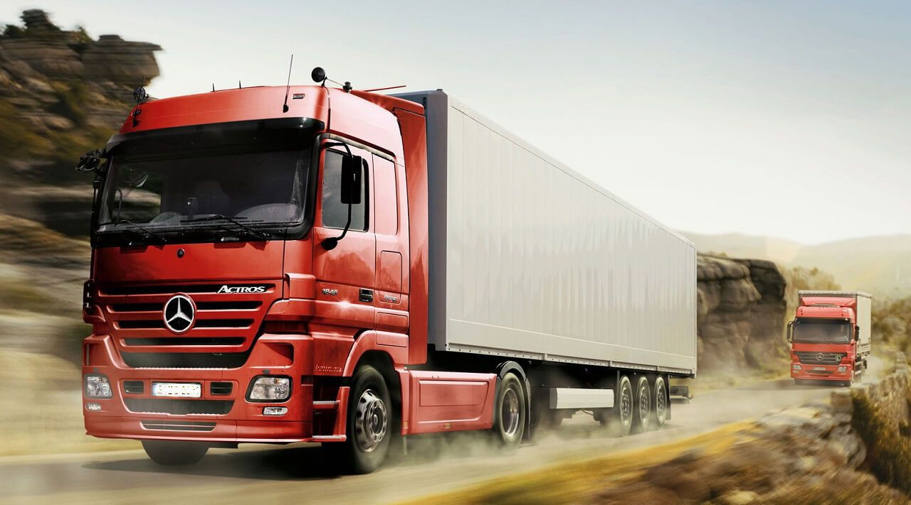

Транспортная компания "ГрузовичОК" специализируется на организации грузоперевозок по всей стране. Мы предлагаем широкий спектр услуг, включая перевозку грузов различного типа: от крупногабаритных до мелкомасштабных. Наша компания обеспечивает надежную и своевременную доставку грузов с использованием современного транспортного оборудования и профессионального персонала.
Мы стремимся к высокому качеству обслуживания клиентов и индивидуальному подходу к каждому заказчику. Наша команда готова предложить оптимальные логистические решения для различных видов грузовых перевозок, учитывая особенности и требования каждого клиента.
С нами ваш груз будет доставлен вовремя и безопасно!
